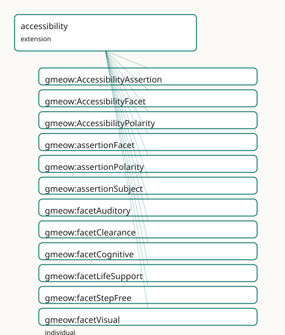

GMEOW Accessibility Module
- IRI: https://blackcatinformatics.ca/gmeow/slices/accessibility
- Tier: extension
Group: extensions
What This Slice Covers
This slice owns 19 terms and contributes 16 mapping or projection rows. Use it when its terms match the native fact you want to preserve; use the linkage tables to see how those facts leave GMEOW for consumer vocabularies.
Dependencies
Consumers
- Accessibility facets over places and routes; the schema.org accessibility projection.
Local Map

Terms
Classes
| Term | Label | Definition |
|---|---|---|
gmeow:AccessibilityAssertion |
Accessibility Assertion | A reified claim that a location or connection has a positive accessibility feature, a barrier, or a limited status for a given facet. Bears provenance (vantage... |
gmeow:AccessibilityFacet |
Accessibility Facet | The dimension of accessibility being asserted — wheelchair, step-free, visual, auditory, cognitive, clearance, life-support. An open value vocabulary (individu... |
gmeow:AccessibilityPolarity |
Accessibility Polarity | The polarity of an accessibility assertion — feature (positive), barrier (negative), or limited (partial). |
Properties
| Term | Label | Definition |
|---|---|---|
gmeow:assertionFacet |
assertion facet | The accessibility facet being asserted. Functional per relator: one facet per AccessibilityAssertion. |
gmeow:assertionPolarity |
assertion polarity | Whether the assertion is a positive feature, a negative barrier, or a limited/partial status. Functional per relator: one polarity per AccessibilityAssertion. |
gmeow:assertionSubject |
assertion subject | The location or connection being assessed. Functional per relator: one subject per AccessibilityAssertion. |
gmeow:hasAccessibilityFeature |
has accessibility feature | Relates a location to an accessibility facet it positively provides. Non-functional: a location may support many facets. A location MAY simultaneously carry ha... |
gmeow:hasAccessibilityNeed |
has accessibility need | Relates an entity to an accessibility facet it requires in order to reach or use a location. Non-functional: needs are co-equal facets (Principle 9). There is... |
gmeow:hasBarrier |
has barrier | Relates a location to an accessibility facet it impedes. Non-functional: a location may have multiple barriers. A location MAY simultaneously carry hasAccessib... |
Individuals
| Term | Label | Definition |
|---|---|---|
gmeow:facetAuditory |
auditory access | Access for people with auditory impairments — visual alarms, induction loops, sign language. |
gmeow:facetClearance |
physical clearance | Sufficient physical space for passage — doorway width, corridor width, turning radius, vertical clearance. |
gmeow:facetCognitive |
cognitive access | Access for people with cognitive impairments — clear signage, simple wayfinding, sensory-quiet spaces. |
gmeow:facetLifeSupport |
life-support access | Access for people who require life-support equipment — power outlets, oxygen, climate control, emergency protocols. |
gmeow:facetStepFree |
step-free access | Access without steps or stairs — ramps, lifts, level entrances. |
gmeow:facetVisual |
visual access | Access for people with visual impairments — tactile paving, audio signals, high contrast, braille. |
gmeow:facetWheelchair |
wheelchair access | Access for wheelchair users — level surfaces, ramps, elevators, wide doorways. |
gmeow:polarityBarrier |
barrier | A negative accessibility barrier — the subject impedes the facet. |
gmeow:polarityFeature |
feature | A positive accessibility feature — the subject provides the facet. |
gmeow:polarityLimited |
limited | A partial or limited accessibility status — the subject provides the facet under some conditions but not all. |
Linkages
- Rows: 16
- Projection profiles:
schema-org - External vocabularies:
fhir,schema,sosa
| Source | Kind | Profile | Predicate/Relation | Target | Evidence |
|---|---|---|---|---|---|
gmeow:AccessibilityAssertion |
equivalence | - |
skos:closeMatch | sosa:Observation | gmeow-accessibility.sssom.tsv; gmeow:eqA11y003; confidence 0.7 |
gmeow:facetAuditory |
equivalence | - |
skos:closeMatch | fhir:sid/icf#b2 | gmeow-accessibility.sssom.tsv; gmeow:eqA11y015; confidence 0.8 |
gmeow:facetAuditory |
equivalence | - |
skos:closeMatch | fhir:sid/icf#e125 | gmeow-accessibility.sssom.tsv; gmeow:eqA11y016; confidence 0.8 |
gmeow:facetClearance |
equivalence | - |
skos:closeMatch | fhir:sid/icf#d4 | gmeow-accessibility.sssom.tsv; gmeow:eqA11y020; confidence 0.7 |
gmeow:facetCognitive |
equivalence | - |
skos:closeMatch | fhir:sid/icf#b1 | gmeow-accessibility.sssom.tsv; gmeow:eqA11y017; confidence 0.8 |
gmeow:facetCognitive |
equivalence | - |
skos:closeMatch | fhir:sid/icf#e140 | gmeow-accessibility.sssom.tsv; gmeow:eqA11y018; confidence 0.7 |
gmeow:facetLifeSupport |
equivalence | - |
skos:closeMatch | fhir:sid/icf#e5 | gmeow-accessibility.sssom.tsv; gmeow:eqA11y019; confidence 0.7 |
gmeow:facetStepFree |
equivalence | - |
skos:closeMatch | fhir:sid/icf#d4 | gmeow-accessibility.sssom.tsv; gmeow:eqA11y012; confidence 0.8 |
gmeow:facetVisual |
equivalence | - |
skos:closeMatch | fhir:sid/icf#b2 | gmeow-accessibility.sssom.tsv; gmeow:eqA11y013; confidence 0.8 |
gmeow:facetVisual |
equivalence | - |
skos:closeMatch | fhir:sid/icf#e135 | gmeow-accessibility.sssom.tsv; gmeow:eqA11y014; confidence 0.8 |
gmeow:facetWheelchair |
equivalence | - |
skos:closeMatch | fhir:sid/icf#d4 | gmeow-accessibility.sssom.tsv; gmeow:eqA11y010; confidence 0.8 |
gmeow:facetWheelchair |
equivalence | - |
skos:closeMatch | fhir:sid/icf#e115 | gmeow-accessibility.sssom.tsv; gmeow:eqA11y011; confidence 0.8 |
gmeow:hasAccessibilityFeature |
equivalence | - |
skos:closeMatch | schema:accessibilityFeature | gmeow-accessibility.sssom.tsv; gmeow:eqA11y001; confidence 0.8 |
gmeow:hasBarrier |
equivalence | - |
skos:closeMatch | schema:accessibilityHazard | gmeow-accessibility.sssom.tsv; gmeow:eqA11y002; confidence 0.75 |
gmeow:hasAccessibilityFeature |
projection | schema-org |
projects to / <= | schema:accessibilityFeature | gmeow:mapSchemaAccessibilityFeature; confidence 0.7; lossy: GMEOW AccessibilityFacet individuals are emitted as IRIs; schema.org expects specific text tokens (wheelchairAccessible, stepFreeAccess, etc.). The consumer must map IRIs to tokens. |
gmeow:hasBarrier |
projection | schema-org |
projects to / <= | schema:accessibilityHazard | gmeow:mapSchemaAccessibilityHazard; confidence 0.7; lossy: GMEOW AccessibilityFacet individuals are emitted as IRIs; schema.org expects specific text tokens (flashingHazard, motionSimulationHazard, soundHazard, etc.). The consumer must map IRIs to tokens. |
Guide
Accessibility — features, barriers, and needs as co-equal facets
Slice:
https://blackcatinformatics.ca/gmeow/slices/accessibility· tier: extension Whether an entity can reach or use a location under constraints — said honestly, per facet.
Most vocabularies flatten accessibility to a boolean (wheelchairAccessible true). GMEOW
refuses the collapse: accessibility is a family of orthogonal dimensions — wheelchair,
step-free, visual, auditory, cognitive, clearance, life-support — and each dimension is an
open value facet (Principle 9: individuals, never subclasses; a new facet is data, not a
schema change). Features, barriers, and needs are co-equal: there is no "primary need", and
a location may honestly carry both a feature and a barrier for the same facet (a ramp at
the front entrance, stairs at the side). The flat shortcuts cover the 80 % case; promote to
a reified AccessibilityAssertion when provenance, confidence, temporal scope, or
suppression matter (Principle 10: suppression is displayable false, never deletion).
The slice is part of the Location-as-reference-frame epic.
Its Principle-15 consumer, declared in the manifest: accessibility facets over places and
routes, and the schema.org accessibility projection — every term here either drives
accessible-route solving or down-projects to schema:accessibilityFeature and kin.
The value vocabularies
gmeow:AccessibilityFacet
The dimension being asserted — the seeds are facetWheelchair, facetStepFree,
facetVisual, facetAuditory, facetCognitive, facetClearance, facetLifeSupport.
An open vocabulary (Principle 9): a facet not among the seeds is a fresh individual with a
label, never a subclass. Facets are the shared currency of all three shortcut properties
and of the reified assertion.
gmeow:AccessibilityPolarity
The sign of a reified claim: polarityFeature (the subject provides the facet),
polarityBarrier (it impedes it), or polarityLimited (it provides it under some
conditions but not all). Polarity exists only on the reified form — the flat shortcuts
encode polarity in the property name.
The flat shortcuts (the 80 % case)
gmeow:hasAccessibilityFeature
Location → AccessibilityFacet: the location positively provides the facet.
Non-functional — a location may support many facets, and may simultaneously carry
hasBarrier for the same facet under different local conditions. The properties are
deliberately not disjoint; disambiguation belongs to the reified form, not to schema
exclusions.
gmeow:hasBarrier
Location → AccessibilityFacet: the location impedes the facet. The honest negative —
a barrier is asserted data, not the mere absence of a feature (open world: silence means
unknown, hasBarrier means known impediment).
gmeow:hasAccessibilityNeed
Entity → AccessibilityFacet: what an entity requires in order to reach or use a
location. Needs are co-equal facets (Principle 9) — all asserted needs coexist. This is
the demand side that the solver matches against the supply side (features/barriers) when
computing accessible routes.
The reified form (promote when metadata matters)
gmeow:AccessibilityAssertion
A gufo:Relator-grounded claim that a location or connection (the connectivity slice's
Connection is an admissible subject) has a feature, barrier, or limited status for a
facet. Bears vantage, confidence, temporal scope, and suppression (displayable false —
Principle 10). Promote here whenever the claim itself must be a node — "accessible
according to the 2024 city audit, disputed by the user survey".
gmeow:assertionSubject · gmeow:assertionFacet · gmeow:assertionPolarity
The three functional role properties of the relator: one subject, one facet, one polarity
per assertion. Relator mediation is axiomatized (someValuesFrom restrictions, EL-safe)
so ELK sees the doctrine; closed-world cardinality is SHACL's job.
Solver layer & bridges
Accessible routes are computed, never asserted (Principle 12): the connectivity slice
declares the routeKindAccessible route kind, and the solver layer walks the connection
graph matching hasAccessibilityNeed against features and barriers to produce a path. The
OWL core only models the inputs.
Dependencies
Depends on kernel and places (the Location domain of the shortcuts). Sibling to
connectivity — mutually independent extensions joined only at the solver layer and at
routeKindAccessible (surgery keeps that value individual beside its value
class, in connectivity).